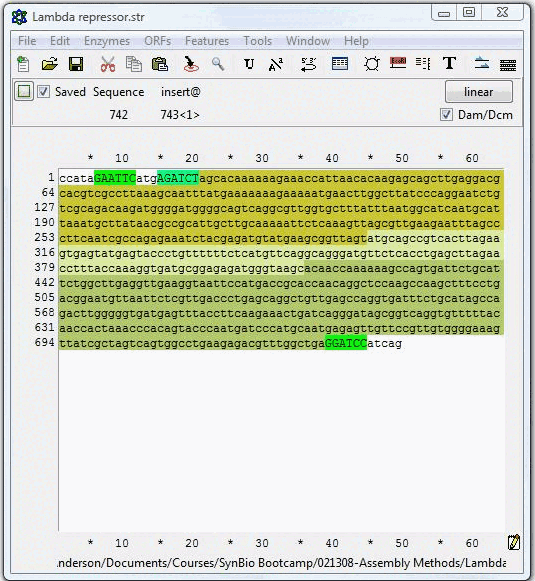
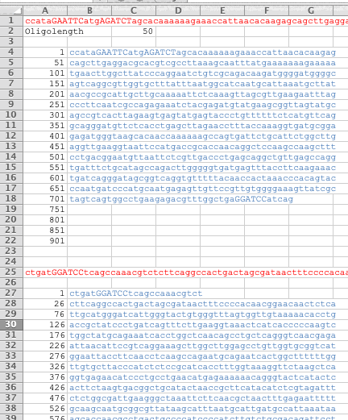

Gene Synthesis refers to the construction of gene-length DNA, typically 800bp to 3kb in length, at base-level precision.
Section divider: Gene Synthesis. The subtitle reads, building up gene-length DNAs from single bases.
The two vendor specifications set as one comparison: the five measures down the left, a vendor to a column, values reading straight across. The first column is IDT single-sequence oligonucleotide synthesis at the 25 nanomole scale in 2026: size 15 to 60 bases, price 47 cents per base at US list, yield 10 nanomoles, turnaround with over 90 percent of orders shipping within 24 hours, and the DNA arrives chemically pure, sequence non-clonal and single-stranded. The second column is empty until a click. A source line under the table reads, vendor list prices, September 2026.
Oligonucleotide Synthesis
Phosphoramidite oligonucleotide synthesis
Cost ~$11 at an academic contract rate (~$28 at list) and come in 24 hrs reliably
Available from 6 bases up to 200 with a long-oligo product (IDT Ultramer, Eurofins EXTREmer)
The price break is a scale boundary, not a length penalty: the 25 nmole scale stops at 60 bases, so a 61-mer forces the 100 nmole scale and $0.47 per base becomes $0.86
They are synthesized 3’ to 5’, opposite that of polymerases
Non-clonal, deletions and truncations increase towards the 5’ end
Five lines on what phosphoramidite oligonucleotide synthesis costs and can do: about eleven dollars at an academic contract rate, about twenty-eight at list, and 24 hours; 6 bases up to 200 with a long-oligo product; a price break that is a scale boundary rather than a length penalty, because the 25 nanomole scale stops at 60 bases and a 61-mer forces the 100 nanomole scale; built 3-prime to 5-prime unlike a polymerase; and non-clonal with deletions and truncations rising toward the 5-prime end.
Ligase Chain Assembly
Example: Gene synthesis oligo design

Construct the complete sequence to be synthesized, including restriction sites and 5’ tails
Copy to the clipboard
A screenshot of a sequence editor holding the lambda repressor sequence with its restriction sites highlighted, beside the two instructions that go with it.
Example: Gene synthesis oligo design

Paste the sequence you wish to synthesize into the spreadsheet
Also paste in the reverse complement sequence
Sequences in blue here are ones you order synthesized
File Demo of LCR design.xls in DNA Fabrication Examples zip file
A screenshot of the design spreadsheet: the target sequence pasted in red across the top, the 50-base oligos it has been cut into listed in blue beneath it, and the reverse complement pasted and cut the same way below.
LCA example question
Design a set of oligos to synthesize the amilGFP gene as a BioBricks part using Ligase Chain Assembly
First assembly the sequence of the PCR product including the BioBrick ends:
ccattgaattcgcggccgcttctagATGTCTTATTCAAAGCATGGCATCGTACAAGAAATGAAGACGAAATACCATATGGAAGGCAGTGTCAATGGCCATGAATTTACGATCGAAGGTGTAGGAACTGGGTACCCTTACGAAGGGAAACAGATGTCCGAATTAGTGATCATCAAGCCTGCGGGAAAACCCCTTCCATTCTCCTTTGACATACTGTCATCAGTCTTTCAATATGGAAACCGTTGCTTCACAAAGTACCCGGCAGACATGCCTGACTATTTCAAGCAAGCATTCCCAGATGGAATGTCATATGAAAGGTCATTTCTATTTGAGGATGGAGCAGTTGCTACAGCCAGCTGGAACATTCGACTCGAAGGAAATTGCTTCATCCACAAATCCATCTTTCATGGCGTAAACTTTCCCGCTGATGGACCCGTAATGAAAAAGAAGACCATTGACTGGGATAAGTCCTTCGAAAAAATGACTGTGTCTAAAGAGGTGCTAAGAGGTGACGTGACTATGTTTCTTATGCTCGAAGGAGGTGGTTCTCACAGATGCCAATTTCACTCCACTTACAAAACAGAGAAGCCGGTCACACTGCCCCCGAATCATGTCGTAGAACATCAAATTGTGAGGACCGACCTTGGCCAAAGTGCAAAAGGCTTTACAGTCAAGCTGGAAGCACATGCCGCGGCTCATGTTAACCCTTTGAAGGTTAAATAAactagtagcggccgctgcagacsgc
Then paste that and its reverse complement into “Demo of LCR design.xls”to get:
Forward oligos:
ccattgaattcgcggccgcttctagATGTCTTATTCAAAGCATGGCATCG
TACAAGAAATGAAGACGAAATACCATATGGAAGGCAGTGTCAATGGCCAT
GAATTTACGATCGAAGGTGTAGGAACTGGGTACCCTTACGAAGGGAAACA
GATGTCCGAATTAGTGATCATCAAGCCTGCGGGAAAACCCCTTCCATTCT
CCTTTGACATACTGTCATCAGTCTTTCAATATGGAAACCGTTGCTTCACA
AAGTACCCGGCAGACATGCCTGACTATTTCAAGCAAGCATTCCCAGATGG
AATGTCATATGAAAGGTCATTTCTATTTGAGGATGGAGCAGTTGCTACAG
CCAGCTGGAACATTCGACTCGAAGGAAATTGCTTCATCCACAAATCCATC
TTTCATGGCGTAAACTTTCCCGCTGATGGACCCGTAATGAAAAAGAAGAC
CATTGACTGGGATAAGTCCTTCGAAAAAATGACTGTGTCTAAAGAGGTGC
TAAGAGGTGACGTGACTATGTTTCTTATGCTCGAAGGAGGTGGTTCTCAC
AGATGCCAATTTCACTCCACTTACAAAACAGAGAAGCCGGTCACACTGCC
CCCGAATCATGTCGTAGAACATCAAATTGTGAGGACCGACCTTGGCCAAA
GTGCAAAAGGCTTTACAGTCAAGCTGGAAGCACATGCCGCGGCTCATGTT
AACCCTTTGAAGGTTAAATAAactagtagcggccgctgcagacsgc
Reverse oligos:
gcsgtctgcagcggccgctactagt
TTATTTAACCTTCAAAGGGTTAACATGAGCCGCGGCATGTGCTTCCAGCT
TGACTGTAAAGCCTTTTGCACTTTGGCCAAGGTCGGTCCTCACAATTTGA
TGTTCTACGACATGATTCGGGGGCAGTGTGACCGGCTTCTCTGTTTTGTA
AGTGGAGTGAAATTGGCATCTGTGAGAACCACCTCCTTCGAGCATAAGAA
ACATAGTCACGTCACCTCTTAGCACCTCTTTAGACACAGTCATTTTTTCG
AAGGACTTATCCCAGTCAATGGTCTTCTTTTTCATTACGGGTCCATCAGC
GGGAAAGTTTACGCCATGAAAGATGGATTTGTGGATGAAGCAATTTCCTT
CGAGTCGAATGTTCCAGCTGGCTGTAGCAACTGCTCCATCCTCAAATAGA
AATGACCTTTCATATGACATTCCATCTGGGAATGCTTGCTTGAAATAGTC
AGGCATGTCTGCCGGGTACTTTGTGAAGCAACGGTTTCCATATTGAAAGA
CTGATGACAGTATGTCAAAGGAGAATGGAAGGGGTTTTCCCGCAGGCTTG
ATGATCACTAATTCGGACATCTGTTTCCCTTCGTAAGGGTACCCAGTTCC
TACACCTTCGATCGTAAATTCATGGCCATTGACACTGCCTTCCATATGGT
ATTTCGTCTTCATTTCTTGTACGATGCCATGCTTTGAATAAGACATctag
aagcggccgcgaattcaatgg
A question for the room, marked with the deck's thinking figure: design a set of oligos to synthesize the amilGFP gene as a BioBricks part using Ligase Chain Assembly. The amilGFP open reading frame is printed below it, 696 bases in twelve lines.
PCA Assembly
(Polymerase chain assembly)
PCA Assembly
(Polymerase chain assembly)
Start with overlapping 50-60bp Oligos
Combine in a thermostable polymerase reaction
Run a PCR-like program
Use “assembly product” as template for a conventional PCR with external oligos
Clone the product into a vector to generate a synthon
TRENDS in Biotechnology
The other common way of assembling oligonuceotides into gene-length DNAs is polymerase chain assembly, or PCA.
The five steps of a PCA, listed one at a time beside a drawing of the whole cycle series that gains a row of molecules per click. Nothing is listed yet, and the drawing holds only its top row: a grey rule labelled Target sequence, the length the reaction has to reach.
Example: Gene synthesis oligo design
Design the complete cassette as you did with LCA
Design PCA oligos using a design tool “LCA and PCA Calculator”
The same sequence editor screenshot beside two instructions: design the complete cassette as for LCA, then design the PCA oligos with the LCA and PCA Calculator, whose link is given below them.
PCA example question
Design a set of oligos to synthesize the amilGFP gene as a BioBricks part using Polymerase Chain Assembly
First assembly the sequence of the PCR product including the BioBrick ends:
ccattgaattcgcggccgcttctagATGTCTTATTCAAAGCATGGCATCGTACAAGAAATGAAGACGAAATACCATATGGAAGGCAGTGTCAATGGCCATGAATTTACGATCGAAGGTGTAGGAACTGGGTACCCTTACGAAGGGAAACAGATGTCCGAATTAGTGATCATCAAGCCTGCGGGAAAACCCCTTCCATTCTCCTTTGACATACTGTCATCAGTCTTTCAATATGGAAACCGTTGCTTCACAAAGTACCCGGCAGACATGCCTGACTATTTCAAGCAAGCATTCCCAGATGGAATGTCATATGAAAGGTCATTTCTATTTGAGGATGGAGCAGTTGCTACAGCCAGCTGGAACATTCGACTCGAAGGAAATTGCTTCATCCACAAATCCATCTTTCATGGCGTAAACTTTCCCGCTGATGGACCCGTAATGAAAAAGAAGACCATTGACTGGGATAAGTCCTTCGAAAAAATGACTGTGTCTAAAGAGGTGCTAAGAGGTGACGTGACTATGTTTCTTATGCTCGAAGGAGGTGGTTCTCACAGATGCCAATTTCACTCCACTTACAAAACAGAGAAGCCGGTCACACTGCCCCCGAATCATGTCGTAGAACATCAAATTGTGAGGACCGACCTTGGCCAAAGTGCAAAAGGCTTTACAGTCAAGCTGGAAGCACATGCCGCGGCTCATGTTAACCCTTTGAAGGTTAAATAAactagtagcggccgctgcagacsgc
Then paste that into GeneDesign to get:
>.01.o01 59bp
CCATTGAATTCGCGGCCGCTTCTAGATGTCTTATTCAAAGCATGGCATCGTACAAGAAA
>.01.o02 56bp
CTGCCTTCCATATGGTATTTCGTCTTCATTTCTTGTACGATGCCATGCTTTGAATA
>.01.o03 55bp
AGACGAAATACCATATGGAAGGCAGTGTCAATGGCCATGAATTTACGATCGAAGG
>.01.o04 52bp
CCCTTCGTAAGGGTACCCAGTTCCTACACCTTCGATCGTAAATTCATGGCCA
>.01.o05 55bp
ACTGGGTACCCTTACGAAGGGAAACAGATGTCCGAATTAGTGATCATCAAGCCTG
>.01.o06 54bp
TGTCAAAGGAGAATGGAAGGGGTTTTCCCGCAGGCTTGATGATCACTAATTCGG
>.01.o07 58bp
AACCCCTTCCATTCTCCTTTGACATACTGTCATCAGTCTTTCAATATGGAAACCGTTG
>.01.o08 53bp
CATGTCTGCCGGGTACTTTGTGAAGCAACGGTTTCCATATTGAAAGACTGATG
>.01.o09 55bp
TCACAAAGTACCCGGCAGACATGCCTGACTATTTCAAGCAAGCATTCCCAGATGG
>.01.o10 59bp
ATCCTCAAATAGAAATGACCTTTCATATGACATTCCATCTGGGAATGCTTGCTTGAAAT
>.01.o11 50bp
CATATGAAAGGTCATTTCTATTTGAGGATGGAGCAGTTGCTACAGCCAGC
>.01.o12 54bp
GGATGAAGCAATTTCCTTCGAGTCGAATGTTCCAGCTGGCTGTAGCAACTGCTC
>.01.o13 55bp
GACTCGAAGGAAATTGCTTCATCCACAAATCCATCTTTCATGGCGTAAACTTTCC
>.01.o14 56bp
GGTCTTCTTTTTCATTACGGGTCCATCAGCGGGAAAGTTTACGCCATGAAAGATGG
>.01.o15 58bp
ATGGACCCGTAATGAAAAAGAAGACCATTGACTGGGATAAGTCCTTCGAAAAAATGAC
>.01.o16 54bp
CACCTCTTAGCACCTCTTTAGACACAGTCATTTTTTCGAAGGACTTATCCCAGT
>.01.o17 55bp
TGTCTAAAGAGGTGCTAAGAGGTGACGTGACTATGTTTCTTATGCTCGAAGGAGG
>.01.o18 54bp
TGGAGTGAAATTGGCATCTGTGAGAACCACCTCCTTCGAGCATAAGAAACATAG
>.01.o19 53bp
CTCACAGATGCCAATTTCACTCCACTTACAAAACAGAGAAGCCGGTCACACTG
>.01.o20 59bp
CCTCACAATTTGATGTTCTACGACATGATTCGGGGGCAGTGTGACCGGCTTCTCTGTTT
>.01.o21 50bp
ATCATGTCGTAGAACATCAAATTGTGAGGACCGACCTTGGCCAAAGTGCA
>.01.o22 52bp
GCATGTGCTTCCAGCTTGACTGTAAAGCCTTTTGCACTTTGGCCAAGGTCGG
>.01.o23 59bp
CAGTCAAGCTGGAAGCACATGCCGCGGCTCATGTTAACCCTTTGAAGGTTAAATAAACT
>.01.o24 50bp
GCGTCTGCAGCGGCCGCTACTAGTTTATTTAACCTTCAAAGGGTTAACAT
The same question run the other way, marked with the deck's thinking figure: design a set of oligos to synthesize the amilGFP gene as a BioBricks part using Polymerase Chain Assembly, with the amilGFP open reading frame printed below.
Why don’t we always do this?
In practice it’s slow (our designs took 6 months)
As a non-clonal fragment it only gets you to 3kb before you need to break into two steps, due to mutation rates; sequence-verified clonal genes go further (7kb at Twist, 15kb at Elegen, 50kb at Ansa)
Difficult to synthesize repetitive sequences, biased GC-content, secondary structure (promoters and terminators are problematic)
$$
Total number of bases for 2014’s 140L: 43517
Would cost about ~$6,000 for basic parts
Would cost ~$200,000 for all the composite parts
Twist Clonal Genes list price, September 2026
Today, it is still the case that gene synthesis is used somewhat sparingly along side more conventional fabrication methods. It’s main drawback is that it is slow, and it is also expensive. At the current price, it is impractical for even commercial users to not reuse previously-synthesized genes. When I teach my BioE 140L course at Berkeley, around 20 students each produce around 3 parts. In a typicall year, this amounts to around 40000 bases which for the basic parts alone would cost around $6K. If all the composite parts that got generated during a project were synthesized de novo without reuse, the costs would begin pushing $200K. Thus, this methodology has a long way to go before other methods of fabrication can be fully eliminated from the design-build-test cycle. However, combined with automated assembly methods that enable reuse of synthetic sequence, the price point for these procedures is already making non-standardized DNA fabrication a thing of the past.
The limits of gene synthesis. Three objections first, as a list: it is slow, six months for our designs; as a non-clonal fragment it reaches only 3 kilobases before the work has to be split in two because of mutation rates, while sequence-verified clonal genes go further, to 7 kilobases at Twist, 15 at Elegen and 50 at Ansa; and repetitive sequence, biased GC content and secondary structure are all hard, which makes promoters and terminators the problem cases. Then cost, under a heading of two dollar signs: the total number of bases for the 2014 course was 43517, which would cost about 6,000 dollars for basic parts. That figure is drawn as a short bar. A source line at the foot of the slide reads, Twist Clonal Genes list price, September 2026.